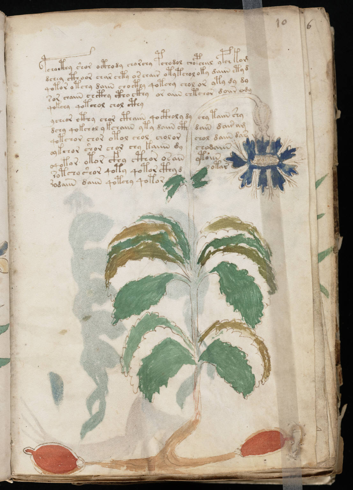

f10r
1pchocthy shor octhody chorchy pchodol chopchal ypch kom2dchey cthoor char chty os chair otytchol oky daiin etyd3qotor otchy daiin chocthy qotchy chol or yty dy dy4sor chaiin chcthy ctho ckhy or aiin chtchor doiir ody5qokchy qotchol chol cthy6ycheor cthy chor cthaiin qoctholy dychy taiin shy7dchy qokchol ykchaiin yty daiin cthdain dair am8qotchor chor otol chol cholorchol daiin dar9oykchor shor chor chy kaiiin dychodaiin10oqotar otor cfhy cthor osainytoiin11rotcho shor qoty qotor cthy dotar12rodaiin daiin qotchy qotor
